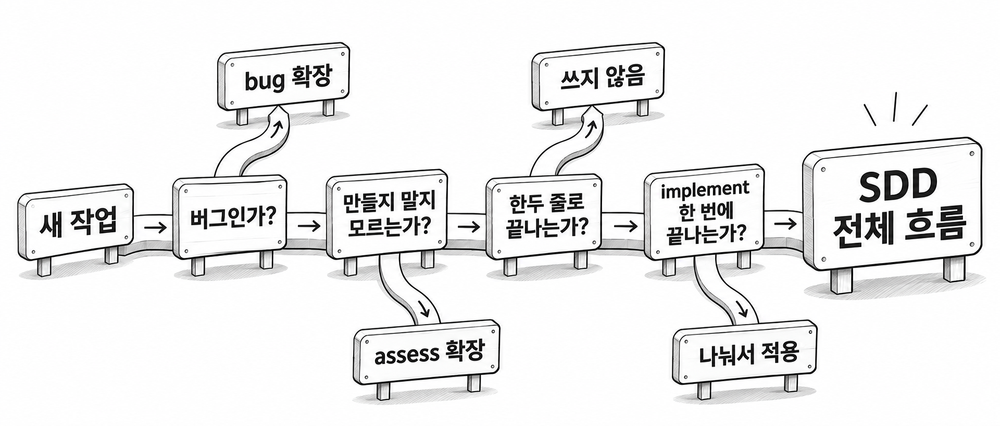
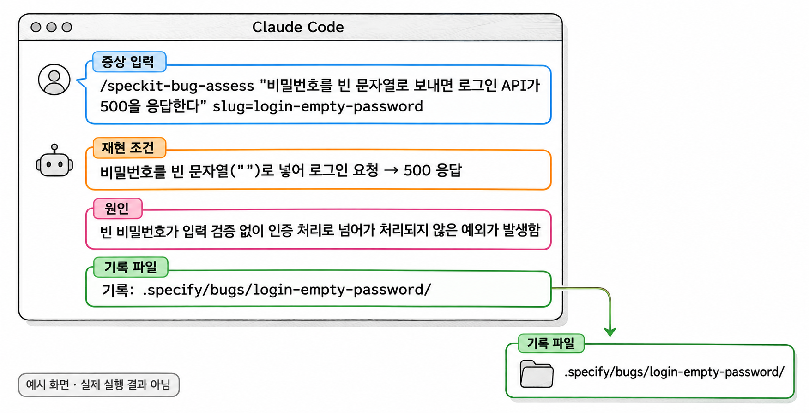

13장. 언제 SDD를 쓸까?
1. 작업 크기에 따라 방법 고르기
스펙 · 계획 · 작업 목록을 만들고 검토하는 데는 시간이 듭니다. 작업이 그 시간을 들일 만큼 커야 이 절차가 이득입니다. 오타 하나를 고치려고 스펙부터 쓰면 일이 몇 배로 늘어납니다. 이런 경험이 쌓이면 팀은 도구를 통째로 버리게 됩니다. SDD를 오래 쓰려면 모든 작업에 쓰지 말고, 작업의 크기와 성격을 보고 방법을 골라야 합니다.
예제 프로젝트에서 생길 만한 작업을 방법별로 나누면 다음과 같습니다.
| 작업의 성격 | 예제 프로젝트의 예 | 고를 방법 |
|---|---|---|
| 요구를 문장으로 설명할 수 있는 새 기능 | 댓글 기능 추가 | SDD 전체 흐름 |
| 운영 중인 프로젝트에서 범위가 분명한 변경 | 댓글 수정 추가 | SDD 전체 흐름(이번 변경만 스펙으로) |
| 버그 수정 | 로그인 API가 특정 입력에 500을 응답한다 | bug 확장 |
| 만들지 말지부터 정해야 하는 아이디어 | 댓글이 달리면 글쓴이에게 메일을 보낼 것인가 | assess 확장 |
| 오타 · 한 줄 수정 · 설정값 변경 | 오류 메시지 문구 수정, 토큰 유효기간 변경 | 쓰지 않음 |
| 방향을 찾는 실험용 프로토타입 | 검색 방식을 두세 가지 시험해 보기 | 쓰지 않음(방향이 잡히면 스펙으로) |
| 대형 재작성 · 여러 저장소에 걸친 기능 | 인증 방식 전체 교체 | 잘 맞지 않음(작은 조각으로 나눠 적용) |

그림 13-1의 질문 순서는 하나의 예입니다. 실제로는 팀이 자주 겪는 작업에 맞게 질문을 고치고, 고친 기준은 5절에서 README에 적습니다.
1.1 SDD 전체 흐름이 맞는 작업
정할 것이 여러 개인 기능이 SDD 전체 흐름에 맞습니다. 2장의 댓글 기능이 그런 예입니다. 누가 쓸 수 있는지, 누가 지울 수 있는지, 게시글이 없으면 어떻게 되는지를 정해야 했습니다. 이 결정들은 컨트롤러 · 서비스 · 리포지토리 · 테스트 등 여러 파일에 걸쳐 반영됩니다. 이런 작업을 한 줄로 지시하면 정하지 않은 부분을 에이전트가 추측으로 채웁니다. 대화가 길어지면 합의한 결정도 사라집니다.
다음 세 조건을 모두 갖춘 작업이면 SDD 전체 흐름을 고릅니다.
| 조건 | 댓글 기능에서 확인한 모습 |
|---|---|
| 요구를 "누가 무엇을 하면 어떻게 된다"는 문장으로 적을 수 있다 | 7장의 사용자 시나리오 |
| 사람이 정해야 할 결정이 둘 이상이다 | 7장 clarify에서 받은 질문들 |
| tasks.md가 implement 한 번으로 끝날 분량이다 | 8장에서 검토한 작업 목록 |
운영 중인 프로젝트에서 범위가 분명한 변경도 같은 흐름을 탑니다. 이때는 10장에서 정한 대로 기존 시스템이 아니라 이번 변경만 스펙으로 씁니다. 14장에서 만들 댓글 수정 기능이 여기에 해당합니다.
1.2 SDD를 쓰지 않는 작업
정할 것이 없는 작업에는 SDD를 쓰지 않습니다. 오류 메시지 문구를 고치거나, 토큰 유효기간을 바꾸거나, 오타를 고치는 일은 바꿀 곳과 바꿀 값이 이미 정해져 있습니다. 이런 작업은 대화창에서 바로 지시하거나 직접 고치고, 권한 승인 화면에서 바뀌는 내용을 확인하면 됩니다.
방향을 찾는 실험용 프로토타입에도 쓰지 않습니다. 검색 방식을 두세 가지 시험해 보는 단계에서는 무엇을 만들지가 아직 정해지지 않았습니다. 정해지지 않은 것을 스펙으로 확정하면 실험이 끝날 때마다 문서만 버리게 됩니다. 실험으로 방향이 잡히면 그때 고른 방식을 스펙으로 씁니다. 실험 코드는 버리고 스펙부터 다시 시작하는 편이 안전합니다. 실험 코드에는 헌법을 지키지 않은 부분이 섞여 있기 쉽기 때문입니다.
1.3 잘 맞지 않는 작업
SDD를 쓸 수는 있지만 그대로 적용하면 잘 안 되는 작업도 있습니다. 대형 레거시를 통째로 다시 만드는 작업, 여러 저장소에 걸친 기능이 그렇습니다.
이런 작업이 잘 맞지 않는 이유는 1장에서 본 컨텍스트의 한계에 있습니다. 스펙 하나에 담을 요구가 많아지면 계획과 작업 목록도 함께 커집니다. 그러면 에이전트가 한 번에 읽어야 할 문서가 컨텍스트를 채웁니다. 결국 앞쪽 작업에서 지킨 결정을 뒤쪽 작업에서 놓치게 됩니다. 여러 저장소에 걸친 기능에는 문제가 하나 더 있습니다. Spec Kit의 명령은 기능 폴더 하나와 프로젝트 하나를 기준으로 동작합니다. 그래서 다른 저장소의 코드와 규칙을 에이전트가 볼 수 없습니다.
이런 작업은 버리지 말고 나눕니다. 인증 방식 전체 교체라면 "새 방식으로 로그인 API 하나 추가", "기존 API를 하나씩 새 방식으로 옮기기", "옛 방식 제거"처럼 끊어 각 조각을 기능 하나로 다룹니다. 조각을 나누는 기준은 implement 한 번으로 끝나는가입니다. 나누는 방법은 8장의 3.3과 12장의 3절에서 본 그대로입니다.
2. bug 확장
bug 확장은 버그 하나의 원인을 평가하고, 범위를 좁혀 고치고, 처음 증상이 사라졌는지 검증하는 절차를 Spec Kit에 더하는 확장입니다. 버그 수정은 "무엇을 만들까"가 아니라 "무엇이 왜 틀렸나"를 묻는 작업입니다. 그래서 스펙 · 계획 · 작업 목록을 만들지 않고 이 확장의 세 단계만 거칩니다. SDD 흐름으로 만든 기능이 하나도 없는 프로젝트에서도 쓸 수 있습니다.
2.1 설치와 세 단계(assess · fix · test)
확장은 12장에서 본 것처럼 터미널에서 Specify CLI로 설치합니다. bug 확장은 Spec Kit 저장소가 직접 제공하는 확장입니다. 다만 이 책에서 고정한 v1.3.3에서 이 확장을 그대로 설치할 수 있는지는 직접 확인하지 않았습니다. [확인 필요]
예제 13-1 — bug 확장 설치하기
파일명: 없음(프로젝트 폴더의 PowerShell에서 실행)
specify extension add bug실행 결과
설치가 끝났다는 메시지가 출력됩니다. 정확한 문구는 버전마다 다릅니다. Claude Code를 다시 시작한 뒤 대화창에 /speckit-bug까지 입력하면 명령 목록에 다음 세 명령이 보입니다.
/speckit-bug-assess
/speckit-bug-fix
/speckit-bug-test세 명령은 순서대로 실행하고, 모두 같은 slug로 하나의 버그를 가리킵니다. slug는 버그에 붙이는 짧은 영문 이름이며 결과 폴더 이름으로도 쓰입니다.
| 단계 | 명령 | 하는 일 | 사람이 확인할 것 |
|---|---|---|---|
| assess | /speckit-bug-assess "증상" slug=이름 | 증상을 재현할 조건과 원인을 찾아 기록한다 | 원인이 증상을 설명하는가 |
| fix | /speckit-bug-fix slug=이름 | assess에서 찾은 원인만 고친다 | 원인과 관계없는 파일을 고치지 않았는가 |
| test | /speckit-bug-test slug=이름 | 처음 증상이 사라졌는지 확인하고 판정을 남긴다 | 판정과 근거로 남긴 출력 |
기본 문법
/speckit-bug-assess "증상을 적은 문장" slug=버그이름
/speckit-bug-fix slug=버그이름
/speckit-bug-test slug=버그이름증상 문장에는 원인을 짐작해 적지 않습니다. 사용자가 무엇을 했을 때 무엇이 나왔는지만 적습니다. "LoginDTO 검증이 빠졌다"처럼 원인을 미리 적으면 에이전트는 그 짐작을 확인하는 데 그치고, 진짜 원인을 찾지 못합니다. 증상만 적는 원칙은 7장에서 스펙에 기술을 적지 않던 것과 같습니다.
예제 13-2 — 로그인 500 오류 버그 고치기
파일명: 없음(Claude Code 대화창에 입력)
/speckit-bug-assess "비밀번호를 빈 문자열로 보내면 로그인 API가 500을 응답한다" slug=login-empty-password/speckit-bug-fix slug=login-empty-password/speckit-bug-test slug=login-empty-password실행 결과
명령마다 에이전트가 원인 · 수정 · 검증 결과를 대화창에 보고하고, .specify/bugs/login-empty-password/ 폴더에 단계별 기록을 남깁니다. fix 단계에서는 소스 파일을 고치므로 권한 승인 화면이 나타납니다.
이 버그 문장은 절차를 보여 주려고 지어낸 가상의 예입니다. 실제 예제 프로젝트는 로그인 요청 객체의 @NotBlank 검증 때문에 빈 비밀번호에 400을 응답합니다. 그대로 실행하면 assess 단계에서 증상이 재현되지 않는다는 평가가 나옵니다. 이때 재현되지 않았다는 판단도 기록으로 남는지는 직접 확인하지 않았습니다. [확인 필요]

생성형 예시 · 실제 실행 안 함
2.2 결과 기록과 verified 판정
bug 확장은 단계마다 결과를 .specify/bugs/slug이름/ 폴더에 파일로 남깁니다. 9장에서 체크 표시를 tasks.md에 남긴 이유와 같습니다. 대화가 끊기거나 새 대화를 시작해도, 다음 단계가 앞 단계의 원인 평가를 파일에서 읽어 이어 갑니다. 리뷰하는 사람도 대화 기록 없이 그 폴더만 보고 무엇을 왜 고쳤는지 알 수 있습니다.
test 단계는 판정 세 가지 가운데 하나를 남깁니다.
| 판정 | 뜻 | 다음에 할 일 |
|---|---|---|
verified | 처음 증상이 사라진 것을 확인했다 | 수정을 커밋하고 리뷰를 받는다 |
partial | 일부 조건에서만 증상이 사라졌다 | 재현 조건을 좁혀 assess부터 다시 한다 |
failed | 증상이 그대로 남았다 | 원인 평가가 틀렸으므로 assess부터 다시 한다 |
수정이 성공했다고 볼 수 있는 판정은 verified 하나뿐입니다. 에이전트가 대화창에서 "고쳤습니다"라고 보고해도 판정이 partial이면 버그는 아직 남아 있습니다. partial과 failed일 때 할 일은 공개된 사용 사례를 바탕으로 정리했습니다. [확인 필요]
verified도 9장의 Converged와 마찬가지로 사람의 확인을 대신하지 않습니다. 에이전트가 검증한 것은 assess에 적힌 증상 하나입니다. 이 수정이 다른 기능을 깨뜨리지 않았는지는 .\gradlew test로 전체 테스트를 돌려 확인합니다. 같은 증상이 다시 생기지 않도록 테스트가 하나 추가되었는지도 diff에서 봅니다.
3. assess 확장
assess 확장은 아이디어 하나를 만들지 말지, 근거를 모아 결정하게 돕는 확장입니다. 코드를 쓰지 않고, 결과는 결정 문서로 남습니다. "댓글이 달리면 글쓴이에게 메일을 보낼까?" 같은 질문이 여기에 해당합니다. 이 질문을 바로 /speckit-specify에 넣으면 에이전트는 만든다는 전제로 스펙을 씁니다. 메일 서버가 있는지, 사용자가 원하는지처럼 먼저 따져야 할 질문은 건너뛰게 됩니다.
설치는 bug 확장과 같은 방식입니다. 설치한 뒤에는 대화창에서 다섯 명령을 차례로 실행합니다. 다섯 명령 모두 같은 slug로 하나의 아이디어를 가리킵니다. 각 단계가 하는 일은 명령 이름과 남기는 파일을 바탕으로 정리했습니다. [확인 필요]
| 순서 | 명령 | 하는 일 |
|---|---|---|
| 1 | /speckit-assess-intake "아이디어" slug=이름 | 아이디어를 접수해 기록한다 |
| 2 | /speckit-assess-research slug=이름 | 판단에 필요한 근거를 조사한다 |
| 3 | /speckit-assess-define slug=이름 | 아이디어가 풀려는 문제를 정의한다 |
| 4 | /speckit-assess-shape slug=이름 | 해결 방법의 대략적인 모양을 잡는다 |
| 5 | /speckit-assess-decide slug=이름 | 결정을 내리고 decision.md에 남긴다 |
예제 13-3 — 댓글 알림 메일 아이디어 평가하기
파일명: 없음(설치는 PowerShell, 나머지는 Claude Code 대화창에 입력)
specify extension add assess/speckit-assess-intake "댓글이 달리면 게시글 작성자에게 알림 메일을 보낸다" slug=reply-mail/speckit-assess-research slug=reply-mail/speckit-assess-define slug=reply-mail/speckit-assess-shape slug=reply-mail/speckit-assess-decide slug=reply-mail실행 결과
.specify/assessments/reply-mail/ 폴더에 단계별 문서가 생기고, 마지막에 decision.md가 만들어집니다. decision.md에는 다음 판정 가운데 하나가 적힙니다.
| 판정 | 뜻 | 다음에 할 일 |
|---|---|---|
go | 만들 가치가 있다 | decision.md의 인계 요약을 /speckit-specify에 넘긴다 |
needs-clarification | 판단할 근거가 부족하다 | 빈칸을 채운 뒤 다시 결정한다 |
kill | 만들지 않는다 | 결정과 이유를 기록으로 남기고 끝낸다 |
needs-clarification이 나와도 다섯 단계를 처음부터 다시 실행하지 않습니다. 이미 생긴 마크다운 문서의 빈칸을 직접 채우거나, 대화창에서 에이전트에게 그 문서를 고치게 합니다. 예를 들어 "운영 서버에 메일 발송 수단이 있는가"가 빈칸이라면 사람이 사실을 확인해 해당 문서에 적습니다. 7장의 clarify에서 기존 코드와 데이터를 근거로 답했던 것과 같은 일입니다.
kill도 실패가 아닙니다. 만들지 않기로 한 이유가 파일로 남아 있으면, 몇 달 뒤 같은 아이디어가 다시 나왔을 때 처음부터 논의하지 않아도 됩니다.
4. 외부 평가와 검토하는 사람의 역할
Spec Kit을 팀에 들이기 전에 외부의 평가도 알아 둡니다. Thoughtworks는 2026년 4월 기술 레이더에서 Spec Kit을 "도입(Adopt)"이 아니라 "평가(Assess)" 단계에 두었습니다. 평가 단계는 시험해 볼 만하지만 아직 널리 권하지는 않는다는 뜻입니다. 이 평가가 지적한 주의점과 이 책에서 다룬 곳은 다음과 같습니다.
| 주의점 | 무슨 일인가 | 이 책의 대응 |
|---|---|---|
| 지시문 비대 | 프로젝트 맥락을 계속 덧붙이면 에이전트가 읽을 지시문이 커지고 컨텍스트 품질이 떨어진다 | 1장 4절 컨텍스트의 한계, 12장 2절 헌법 줄이기 |
| 장황한 문서 | 생성된 마크다운이 길어 읽는 사람의 부담이 커진다 | 12장 3절 기능 작게 유지하기 |
| 불필요한 방어 코드 | 생성된 코드에 필요 없는 검사가 들어간다 | 9장 3절 코드 리뷰 |
평가 단계라는 분류는 시점에 따라 바뀔 수 있습니다. 팀에 소개할 때는 최신판 기술 레이더를 다시 확인합니다.
공개된 적용 사례들이 공통으로 내린 결론도 하나 있습니다. 성과는 도구보다 문서를 검토하는 사람에게 달려 있다는 것입니다. 스펙과 계획을 읽고 틀린 곳을 짚을 수 있는 사람에게 Spec Kit은 결정을 놓치지 않게 하는 도구가 됩니다. 생성된 문서를 읽지 않고 다음 명령으로 넘기는 사람에게는 문서만 늘리는 도구가 됩니다.
이 책의 예제가 그 차이를 보여 줍니다. 8장의 plan 검토에서 바로잡은 내용을 다시 보면 다음과 같습니다.
| 8장에서 바로잡은 것 | 바로잡을 수 있었던 이유 |
|---|---|
| Reply 엔티티를 새로 만들지 않고 기존 것을 쓴다 | 6장에서 Reply가 이미 있다는 것을 확인했다 |
| BoardRepository를 새로 만드는 작업을 넣는다 | 6장에서 BoardRepository가 없다는 것을 확인했다 |
주소를 /api/로 시작하게 고친다 | SecurityConfig의 인증 규칙을 알고 있었다 |
세 가지 모두 에이전트가 아니라 기존 코드를 아는 사람이 찾았습니다. 에이전트는 문서를 빠르게 만들고, 사람은 그 문서가 우리 프로젝트의 사실과 맞는지 판단합니다. SDD에서 사람이 맡는 일이 바로 이 판단입니다. 그래서 팀에 들일 때는 단계마다 누가 검토하는지를 정해 두어야 합니다.
5. 팀 운영 규칙을 README에 남기기
10장부터 이 장까지 정한 것들은 모두 팀의 약속입니다. 보존 모델, 고정할 버전, SDD를 쓸 작업과 쓰지 않을 작업이 여기에 들어갑니다. 이 약속은 도구의 설정값이 아니어서 Spec Kit이 대신 지켜 주지 않습니다. 대화나 회의에서만 정하면, 2장에서 본 것처럼 결정이 사라지는 일이 팀 안에서도 똑같이 일어납니다. 새로 온 사람은 그 결정을 모르고, 사람마다 다르게 일하게 됩니다.
그래서 운영 규칙은 저장소의 README에 적습니다. README는 저장소를 연 사람이 가장 먼저 읽는 파일입니다. 에이전트에게 "README의 운영 규칙을 따르라"고 지시할 수도 있습니다.
5.1 README에 적을 항목
README에는 다음 항목을 적습니다. 각 항목의 근거는 앞 장에서 다루었으므로 여기서는 결정만 적습니다.
| 항목 | 적을 내용 | 근거가 된 장 |
|---|---|---|
| 방법 고르기 | 작업 성격별로 SDD 전체 흐름 · bug · assess · 쓰지 않음 · 나눠서 적용 중 무엇을 쓰는가 | 13장 1절 |
| 버전 | 고정한 Specify CLI 버전과 설치 명령 | 5장 2절 |
| 보존 모델 | 끝난 스펙을 어떻게 남기는가 | 11장 4절 |
| 업그레이드 절차 | 브랜치, 업그레이드 전 커밋, 확인할 파일 | 12장 1절 |
| 헌법 관리 | 누가 언제 조항을 줄이는가 | 12장 2절 |
| 기능 크기 | 한 기능의 상한 | 12장 3절 |
| 확장 | 설치한 확장 목록과 새 확장을 들이는 조건 | 12장 4절 |
| 검토 책임 | 단계마다 누가 무엇을 확인하는가 | 13장 4절 |
규칙은 지켰는지 판별할 수 있는 문장으로 적습니다. 6장에서 헌법 조항을 판별할 수 있게 쓴 것과 같은 기준입니다. "작은 작업에는 SDD를 쓰지 않는다"는 사람마다 다르게 읽힙니다. "한 파일 안에서 다섯 줄 이하로 끝나는 수정에는 스펙을 쓰지 않는다"라고 적어야 판별할 수 있습니다.
5.2 운영 규칙 예시
블로그 API 팀이 정한 운영 규칙을 README의 한 절로 적으면 다음과 같습니다. 숫자와 주기는 이 팀이 정한 값이므로, 여러분의 팀에서는 실제로 지킬 수 있는 값으로 바꿉니다.
예제 13-4 — README에 운영 규칙 적기
파일명: README.md(기존 README 끝에 추가)
## SDD 운영 규칙
### 1. 방법 고르기
| 작업 | 방법 |
|---|---|
| 요구를 시나리오로 쓸 수 있는 새 기능 · 기능 변경 | SDD 전체 흐름(이번 변경만 스펙으로) |
| 버그 수정 | bug 확장(assess → fix → test) |
| 만들지 말지 정해지지 않은 아이디어 | assess 확장 |
| 한 파일 안에서 다섯 줄 이하로 끝나는 수정, 설정값 변경 | SDD를 쓰지 않음 |
| 방향을 찾는 실험 | SDD를 쓰지 않음. 방향이 정해지면 스펙부터 다시 시작 |
| tasks.md가 15개 작업을 넘는 기능 | 스펙 단계에서 기능을 나눈 뒤 SDD 전체 흐름 |
### 2. 버전
- Specify CLI는 v1.3.3으로 고정한다.
- 설치: `uv tool install specify-cli --from git+https://github.com/github/spec-kit.git@v1.3.3`
- 버전을 올릴 때는 이 절의 버전을 먼저 고치는 PR을 만들고 팀 리뷰를 받는다.
### 3. 끝난 스펙 보존
- 기본은 Flow-Forward Spec이다. 변경마다 `specs/` 아래 새 폴더를 만든다.
- 새 스펙의 "관련 기능"에 이전 스펙 폴더 이름을 적는다.
- 댓글 기능처럼 자주 바뀌는 핵심 기능만 팀 합의를 거쳐 Living Spec으로 옮긴다.
### 4. 업그레이드
- 업그레이드는 `chore/speckit-upgrade` 브랜치에서 한다.
- 업그레이드 전에 `.specify/memory/constitution.md`와 수정한 템플릿을 커밋한다.
- 업그레이드 뒤 `git diff`로 헌법과 수정한 템플릿이 바뀌지 않았는지 확인한다.
### 5. 헌법 관리
- 2주에 한 번 스프린트 회고에서 헌법을 검토한다.
- 최근 리뷰에서 한 번도 근거로 쓰이지 않은 조항은 삭제 후보로 올린다.
- 헌법 조항은 코드를 보고 지켰는지 판별할 수 있는 문장으로만 쓴다.
### 6. 확장
- 설치한 확장: bug, assess
- 새 확장은 명령 파일을 읽은 사람이 PR 설명에 무엇을 하는 명령인지 적은 뒤에 설치한다.
### 7. 검토 책임
- spec.md: 기능을 요청한 사람이 시나리오와 범위 밖을 확인한다.
- plan.md · tasks.md: 해당 패키지를 가장 잘 아는 개발자가 기존 코드 재사용과 헌법 위반을 확인한다.
- 구현: 작업 단위로 코드 리뷰를 하고, `.\gradlew test`가 모두 통과해야 병합한다.
- bug 확장: 판정이 `verified`이고 전체 테스트가 통과해야 병합한다.실행 결과
IntelliJ IDEA에서 README.md의 미리보기를 열면 "SDD 운영 규칙" 절이 일곱 개의 소제목과 표로 보입니다.
1번 표의 "15개 작업"은 이 팀이 implement 한 번에 끝낼 수 있었던 분량을 보고 정한 값입니다. 처음에는 짐작으로 정하고, 기능 몇 개를 끝낸 뒤 implement가 실제로 끊긴 지점을 보고 고칩니다. 2번의 설치 명령은 5장에서 쓴 명령과 같아야 합니다. README의 버전과 실제 설치한 버전이 다르면 규칙을 적은 의미가 없습니다.
7번 검토 책임은 4절에서 본 결론을 규칙으로 바꾼 것입니다. 단계마다 누가 확인하는지를 이름이 아닌 역할로 적어 두면, 사람이 바뀌어도 규칙을 그대로 쓸 수 있습니다.
6. 연습문제 — 상황별 방법 고르기
블로그 API 팀에 다음 여섯 가지 작업이 들어왔습니다.
- 게시글 목록의 기본 페이지 크기를 10에서 20으로 바꾼다.
- 다른 사람의 댓글을 삭제 요청하면 403이 아니라 삭제가 되어 버린다는 신고가 들어왔다.
- 로그인한 사용자가 게시글에 좋아요를 누르고 취소할 수 있게 한다. 좋아요 수는 게시글 상세에 보인다.
- 게시글에 이미지 첨부 기능을 넣을지 팀장이 판단을 요청했다. 저장 공간 비용이 걱정이라고 한다.
- JWT 인증을 세션 인증으로 모두 바꾸고, 별도 저장소에 있는 프런트엔드 코드도 함께 고친다.
- 게시글 검색을 제목 검색 · 본문 전체 검색 · 태그 검색 가운데 무엇으로 할지 직접 만들어 보며 비교한다.
요구사항
- 작업마다 SDD 전체 흐름 · bug 확장 · assess 확장 · 쓰지 않음 · 나눠서 적용 가운데 하나를 고릅니다.
- 고른 이유를 작업마다 한 문장으로 적습니다.
- bug 확장이나 assess 확장을 고른 작업에는 첫 명령을 대화창에 입력할 형태로 적습니다. 증상이나 아이디어 문장과 slug를 포함합니다.
- "나눠서 적용"을 고른 작업은 기능 단위 조각을 세 개 이상 적습니다.
완료 조건
- 여섯 작업 모두 방법이 하나씩 정해져 있습니다.
- bug 확장의 증상 문장에 원인 짐작이 들어 있지 않습니다.
- 나눈 조각 하나하나가 implement 한 번으로 끝날 크기입니다.
- 고른 방법이 예제 13-4의 README 규칙 1번 표와 어긋나면, 표를 고칠지 고른 방법을 고칠지 정하고 그 이유를 적었습니다.